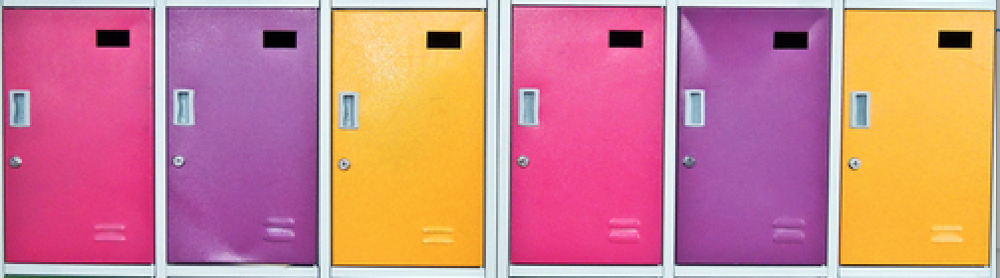
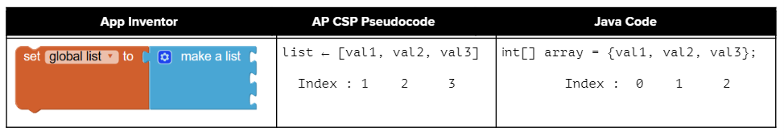
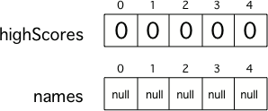
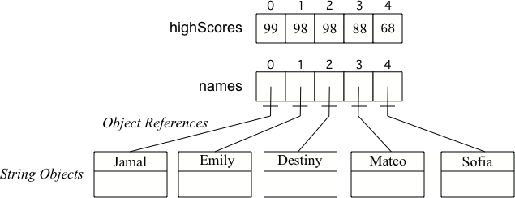

Arrays, Creation, Initial Values, and length
To keep track of 10 exam scores, we could declare 10 separate variables: int score1, int score2, int score3, through int score10.
But what if we had 100 exam scores?
That would be a lot of variables.
Most programming languages have a simple data structure for a collection of related data that makes this easier.
In Java and many programming languages, this is called an array.
An array is a block of memory that stores a collection of data items, called elements, of the same type under one name.
Arrays are useful whenever you have many elements of data of the same type that you want to keep track of, but you do not need to name each one.
Instead, you use the array name and a number, called an index, for the position of an item in the array.
You can make arrays of int, double, String, and even classes that you have written like Student.

A row of lockers
An array is like a row of small lockers, except that you cannot cram lots of stuff into it.
You can only store one value at each locker.
The source intro video is omitted; the locker analogy is retained.
You can store a value in an array using an index, a location in the array.
An array index is like a locker number.
It helps you find a particular place to store and retrieve values.
You can get or store a value from or to an array using an index.

Comparing App Inventor lists and Java arrays
Arrays and lists in most programming languages start counting elements from 0, so the first element in a Java array is at index 0.
This is similar to how String objects are indexed in Java.
shortanswer:: arrayAnalogyCan you think of another example of something that is like an array, like a row of lockers?
Your example should include:
When we declare a variable, we specify its type and then the variable name.
To make a variable into an array, we put square brackets after the data type.
For example, int[] scores means we have an array called scores that contains int values.
The declarations do not create the array.
Arrays are objects in Java, so any variable that declares an array holds a reference to an object.
If the array has not been created yet and you try to print the value of the variable, it will print null, meaning it does not reference any object yet.
There are two ways to create an array:
new to get new memoryTo create an empty array after declaring the variable, use the new keyword with the type and the size of the array.
The size is the number of elements it can hold.
This will actually create the array in memory.
The size of an array is set at the time of creation and cannot be changed after that.
mchoice:: createarrayWhich of the following creates an array of 10 doubles called prices?
int[] prices = new int[10];double[] prices = new double[10];double[] prices;double[10] prices = new double[];Correct answer: B.
activecode:: arrayex1In the following code, add another two more array declarations:
pricesnamesThen add System.out.println calls to print their lengths.
public class Test1
{
public static void main(String[] args)
{
// Array example
int[] highScores = new int[10];
// Add an array of 5 doubles called prices.
// Add an array of 5 Strings called names.
System.out.println(
"Array highScores declared with size " + highScores.length);
// Print out the length of the new arrays
}
}The tests check that the code contains:
new double[5];new String[5];The classroom task also asks students to print the lengths of the new arrays.
newArray elements are initialized to default values:
0 for elements of type int0.0 for elements of type doublefalse for elements of type booleannull for elements of type String
Two 5 element arrays with default values
Another way to create an array is to use an initializer list.
You can initialize the values in the array to a list of values in curly braces when you create it.
In this case you do not specify the size of the array; it is determined from the number of values you specify.

A primitive array and an object array
When you create an array of a primitive type with initial values specified, space is allocated for the specified number of items of that type and the values in the array are set.
When you create an array of an object type like String, space is set aside for that number of object references.
Arrays know their length, how many elements they can store.
The length of an array is established at the time of creation and cannot be changed.
The length can be accessed through the length attribute, a public final instance variable.
Use dot-notation:
activecode:: arrayex2Try running the code below to see the length.
Try adding another value to the highScores initializer list and run again to see the length value change.
After students add another value to the initializer list, the expected output is:
The test also checks that the original code has been changed.
length is an instance variable and not a method, unlike the String length() method.
So you do not add parentheses after length.
However, if you use parentheses after length during the AP exam, you will not lose any points.
The length instance variable is declared as public final int.
public means you can access it and final means the value cannot change.
mchoice:: qarrayLengthWhich index is for the last element of an array called highScores?
highScores.lengthhighScores.length - 1Correct answer: B.
Since the first element in an array is at index 0, the last element is the length minus 1.
0new and with initializer listsarrayName.length and identify the last index as length - 1Next: access and modify array values.